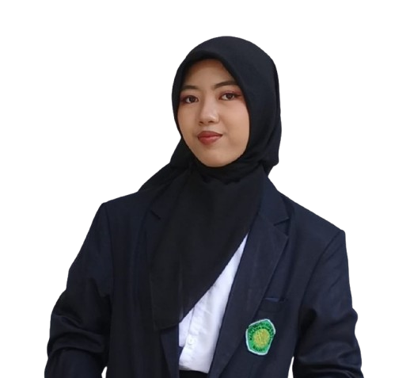

📊 Impact Tracker Dampak Lingkungan
🧪 Kalkulator Formulasi Pupuk Organik
Hitung otomatis takaran molase & air berdasarkan total berat sampah pertanian atau sisa biomassa panen.
Rasio Baku (3 Biomassa : 1 Gula : 10 Air)
- Sampah Pertanian: -
- Molase / Gula Merah: -
- Air Bersih: -
📅 Estimasi Siap Panen: -
📝 Catat Penyetoran Sampah Pertanian Baru
Pencatatan real-time sisa biomassa oleh kader tani mitra lapangan.
Aktivitas Penyetoran Terbaru:
Kelompok Tani Tulus Makmur (Dau, Malang)
Sisa jerami & biomassa pasca panen padi
Sentra Hortikultura Bumiaji (Kota Batu)
Sisa tanaman sayur & brangkasan cabai
📚 Panduan Sederhana Standar Pengolahan
Pemilahan Spesifik Sampah Pertanian
Gunakan khusus sisa biomassa tanaman (jerami, sisa batang sayuran, atau brangkasan panen). Cacah terlebih dahulu agar proses fermentasi berjalan lebih cepat dan optimal.
Pencampuran Terukur & Fermentasi Anaerob
Campurkan biomassa dengan larutan pemacu fermentasi sesuai takaran kalkulator ke dalam wadah tertutup. Simpan di tempat teduh dan pantau proses fermentasinya secara berkala.
Panen & Aplikasi Kembali ke Lahan
Setelah matang sempurna, saring cairan pupuk hayati dan aplikasikan ke lahan pertanian untuk memulihkan unsur hara tanah secara berkelanjutan.
📸 Dokumentasi Aksi Lapangan


👥 Pemimpin Eksekutif AgriLoop
Maudzar Adl Khawarizmiy
Perencanaan Strategis & Evaluasi Dampak Berkelanjutan

Nadhira Haque Ramadhania
Inovasi Sistem Sirkular & Platform Digital
.png)
Sofia
Manajemen Operasional & Pemberdayaan Komunitas
Najwa Asyilah Osnasandi
Administrasi Rantai Pasok Pertanian & Edukasi Mitra
💸 Transparansi Estimasi RAB (Rp 20.000.000)
Alokasi penggunaan dana program hibah / CSR untuk efisiensi di berbagai wilayah operasional:
| Fase & Wilayah | Target Lokasi Node | Fokus Utama / Penerima Manfaat | Alokasi Dana | Status |
|---|---|---|---|---|
|
Fase 1 (Awal) Malang Raya |
Kota Malang, Kab. Malang, & Kota Batu | Pilot Project & Kelompok Tani Lokal |
Rp
8.400.000
|
Fokus Utama |
|
Fase 2 Jawa Timur |
Blitar, Kediri, Pasuruan, dll. | Perluasan ke Kabupaten/Kota Sentra Agrikultur |
Rp
3.600.000
|
Tahap Lanjutan |
|
Fase 3 & 4 Pulau Jawa & Bali |
Jawa Tengah, Jawa Barat, & Bali | Ekspansi Regional & Wilayah Pertanian Terpadu |
Rp
8.000.000
|
Skala Luas |